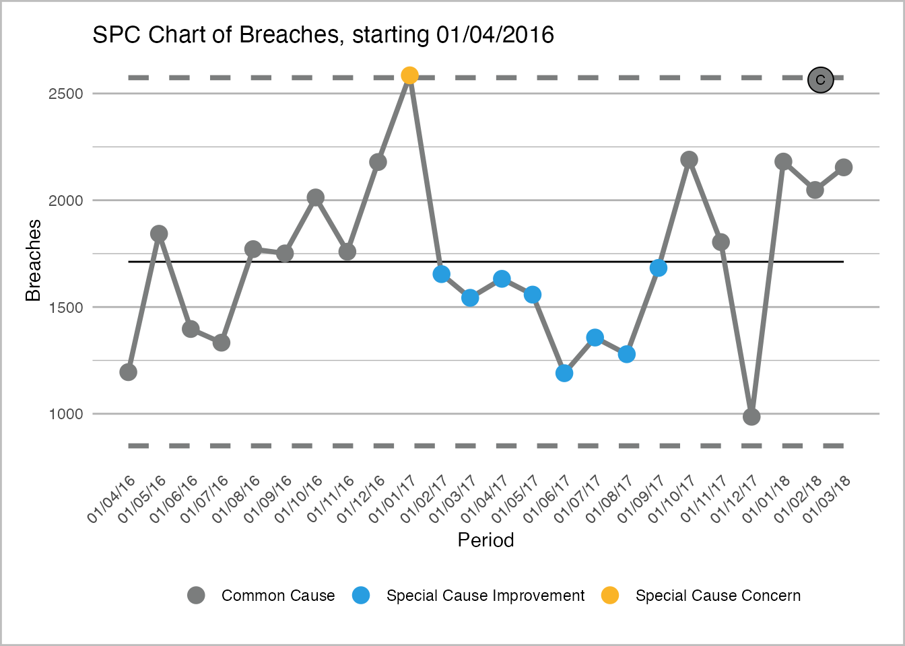
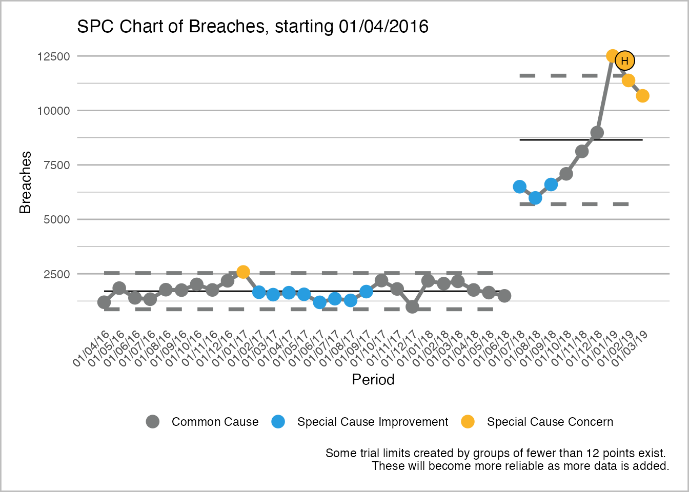
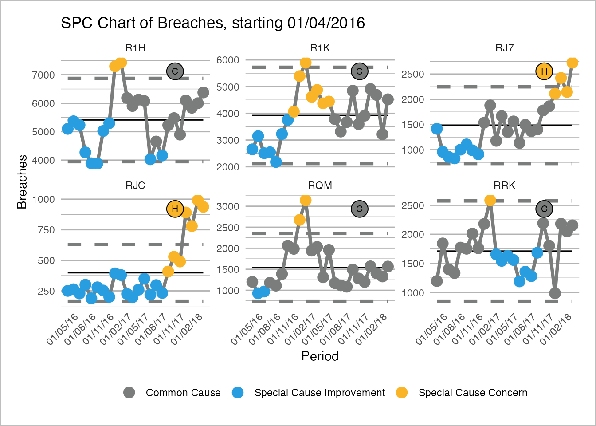

NHSRplotthedots packageintro.RmdThis vignette is a work in progress, feel free to contribute on NHS-R GitHub
Welcome to the NHS-R community’s collaborative package for building a specific type of statistical process control (SPC) chart, the XmR chart. We are aiming to support the NHS England and NHS Improvement’s ‘Making Data Count’ programme, please see here for more details. The programme encourages boards, managers, and analyst teams to present data in ways that show change over time, and drive better understanding of indicators than ‘RAG’ (red, amber, green) rated board reports often present.
This tutorial is a concise take on applying the function to some Accident and Emergency breach data for some NHS hospitals. We’ll take this from the NHSRdatasets package, another of our packages providing example datasets for training in an NHS/healthcare context.
The analyses below use the tidyverse packages: dplyr to manipulate the data, and gggplot2 for plotting (when not using NHSRplotthedots).
Firstly, lets load the data, filter for University Hospital Birmingham NHS Foundation Trust, because they are a good example for the type of charts below. Let’s also do a simple timeseries plot to see why this is the case.
library(NHSRplotthedots)
library(NHSRdatasets)
library(dplyr)
library(ggplot2)
library(scales)
data("ae_attendances")
ae_attendances %>%
filter(org_code == 'RRK' & type ==1) %>%
ggplot(aes(x=period, y= breaches))+
geom_point()+
geom_line()+
scale_y_continuous("4-hour target breaches", labels=comma)+
scale_x_date("Date")+
labs(title="Example plot of A&E breaches for organsiation: 'RRK'")+
theme_minimal()This minimal plot shows the changes over time, and we will look at it in two ways. The first, we’ll look at 2016/17 & 2017/18, which is apparently stable and, during 2018, the trust merged with another large 3-hospital provider trust, so the numbers through A&E shot up dramatically when combined under one trust code. We can use a change point in our plots to consider this.
Let’s now use the spc function to draw our plot. We need to provide it with a data.frame that contains our data, and provide a valueField for the y-axis, and a dateField for the x-axis. Remember to surround the names of the columns in the data.frame with quotes (making it a string, see below). In addition, to ensure the points are coloured correctly, we need to set the improvement direction to “decrease” using the options parameter.
stable_set <-
ae_attendances %>%
filter(org_code == 'RRK' & type ==1 & period < as.Date('2018-04-01'))
spc(stable_set, valueField = "breaches", dateField = "period", options = spcOptions(improvementDirection = "decrease"))
#> Warning: Removed 24 row(s) containing missing values (geom_path).
#> Warning: Removed 24 row(s) containing missing values (geom_path).
#> Warning: Removed 16 rows containing missing values (geom_point).
#> Warning: Removed 24 rows containing missing values (geom_point).
From the chart above, we can see the centre line (mean) and the control limits calculated according the the XmR chart rules. Our points that are between the control limits are within control and showing ‘common-cause’ or ‘natural’ variation. We can see 8 sequential points coloured in yellow. This is triggered by a rule that looks for >=7 points on one side of the mean. This could be viewed as a period where fewer breaches than average were detected, which may hold some learning value for the organisation.
From the first plot above, we can see that the change is noticed at 01/07/2019. We understand the reason for the change (the merging of several trusts), and believe this will be the new normal range for the process, so it would be valid to rebase at this point. To rebase (change the modelling period for control limits), we need to set a binary flag here in our data (achieved with the mutate statement below). We’ve now got an extra column, all set to 0, except 01/07/2019, which is set to 1 to trigger the rebase here. This is then passed to the options argument. You can pass a list with the named elements to options, but it’s probably best to use the helper function spcOptions. You can view the help file, and see what the options are using: ?spcOptions.
change_set <-
ae_attendances %>%
filter(org_code == 'RRK' & type ==1) %>%
mutate(rebased = ifelse(period == as.Date("2018-07-01"), 1 , 0))
spc(change_set, valueField = "breaches", dateField = "period", options = spcOptions(improvementDirection = "decrease", rebase = "rebased"))
#> Warning: Removed 36 row(s) containing missing values (geom_path).
#> Warning: Removed 36 row(s) containing missing values (geom_path).
#> Warning: Removed 25 rows containing missing values (geom_point).
#> Warning: Removed 33 rows containing missing values (geom_point).
You can see that our limit calculation has now shifted at the rebase point.
In R ggplot2 system, facet refers to splitting or plotting by variables, into separate plots or regions. Imagine you want to do an SPC for all trusts in a dataset, or all specialties at a trust. Facet will help you do this, and you can pass the field that controls this to the spc argument facetField.
Here we will pick 6 trusts at random and plot their breaches, faceting across them. We’ll also combine this with a couple more options: letting the x-axis scale for each plot (otherwise some would look crushed against a larger trusts, and changing the x-axis breaks to 3-months, as 1 month looked too busy.)
facet_set <-
ae_attendances %>%
filter(org_code %in% c('RRK', 'RJC', 'RJ7', 'R1K', 'R1H', 'RQM') & type ==1& period < as.Date('2018-04-01'))
spc(facet_set, valueField = "breaches", dateField = "period", facetField = "org_code"
, options = spcOptions(improvementDirection = "decrease", fixedYAxisMultiple = FALSE, xAxisBreaks = "3 months"))
#> Warning: Removed 144 row(s) containing missing values (geom_path).
#> Warning: Removed 144 row(s) containing missing values (geom_path).
#> Warning: Removed 94 rows containing missing values (geom_point).
#> Warning: Removed 122 rows containing missing values (geom_point).
This is a collaborative project that is still early in it’s life. All contributors are volunteers, and more volunteers would be very welcome (there’s even stuff that doesn’t require R coding to help with!). Find out more at: https://github.com/nhs-r-community/NHSRplotthedots